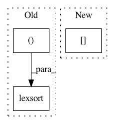

862c3ed042ada33d2824e67e47bd92ef0881cf00,cellprofiler/modules/relateobjects.py,RelateObjects,calculate_minimum_distances,#RelateObjects#Any#Any#,451
Before Change
perim_loc = numpy.argwhere(pperim != 0)
// Get the label // for each point
perim_idx = pperim[perim_loc[:, 0], perim_loc[:, 1]]
// Sort the points by label //
idx = numpy.lexsort((perim_loc[:, 1], perim_loc[:, 0], perim_idx))
perim_loc = perim_loc[idx, :]
perim_idx = perim_idx[idx]
After Change
perim_idx = pperim[perim_loc.transpose().tolist()]
// Sort the points by label //
reverse_column_order = range(children.dimensions)[::-1]
coordinates = perim_loc[:, reverse_column_order].transpose().tolist()
coordinates.append(perim_idx)
In pattern: SUPERPATTERN
Frequency: 3
Non-data size: 3
Instances
Project Name: CellProfiler/CellProfiler
Commit Name: 862c3ed042ada33d2824e67e47bd92ef0881cf00
Time: 2017-04-19
Author: mcquin@users.noreply.github.com
File Name: cellprofiler/modules/relateobjects.py
Class Name: RelateObjects
Method Name: calculate_minimum_distances
Project Name: scipy/scipy
Commit Name: 6f6513963c3f568e5ad985a17a4aee0192223935
Time: 2019-07-17
Author: pete.mahler.larsen@gmail.com
File Name: scipy/spatial/_spherical_voronoi.py
Class Name: SphericalVoronoi
Method Name: _calc_vertices_regions
Project Name: scipy/scipy
Commit Name: f1ce87f99e143246d55b9f45b704563f5f5ac2a7
Time: 2016-02-09
Author: perimosocordiae@gmail.com
File Name: scipy/sparse/csc.py
Class Name: csc_matrix
Method Name: nonzero